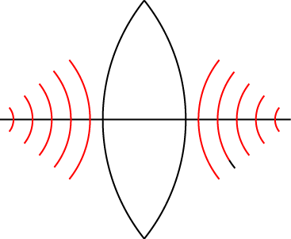
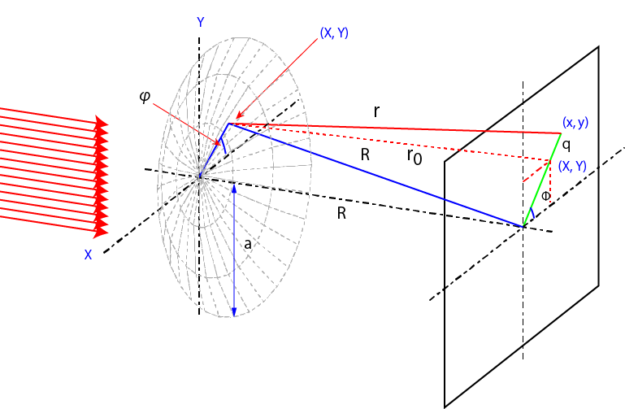

レンズによる集光-01
レンズ
レンズによって集光された光はどのような強度分布を持つのでしょう？
幾何光学では一点に集まると教わってきましたが，レンズのすべての点からの波の重ね合わせを考えると一点のみに集まる，というのは待ちが異な事がわかります．
今回はその強度分布を考えます．
まずは，光の波面がどうなるかを考えます．
今回は凸レンズを考えます．凸レンズは中央が膨らんでいるのですが，波面は逆のカーブとなります．

このことは，
一点から発せられた波は同心円となる
ことから理解してもらえるかと思います．
ですので，以下の図のような面を考えます．

ここで，重要な点は，
開口部がレンズなので，結像面中心からはどのレンズの位置から発せられる波の距離はRとなる
ことです．なので，
中心部はすべての波の位相がそろうので強度が強くなる
のです．
レンズの任意の位置，（X,Y)，から軸に平行な光の結像面までの距離，r0，は，
\(\Large r_0^2 = R^2 - ( X^2 + Y^2 ) \)
となります．ですので，結像面上の任意の点，(x, y)との距離，r，は，
\(\Large \begin{eqnarray} r^2
&=& r_0^2 + (x-X)^2 +(y-Y)^2 \\
&=&
R^2 - ( X^2 + Y^2 ) + (x-X)^2 +(y-Y)^2 \\
&=& R^2 +x^2 + y^2 -2 (Xx+Yy) \\
\end{eqnarray} \)
\(\Large r = R \left[ 1+ \frac{x^2 + y^2}{R^2} -2 \frac{Xx + Yy}{R^2} \right]^{1/2} \)
となります．
ここで，結像面の中心近傍のみを考えると，x, y << R，となるので，
\(\Large r = R \left[ 1 -2 \frac{Xx + Yy}{R^2} \right]^{1/2} \)
となり，微小開口での計算そのままとなります．
そこで，後は円形開口の計算と同じようにすればよいので，強度は，
\(\Large
\begin{eqnarray} I &\propto& \left[ \frac{J_1 (ka \ sin \theta)}{ka \ sin \theta}) \right]^2 \\
&=& \left[ \frac{J_1 (\frac{kaq}{R})}{\frac{kaq}{R}}) \right]^2
\end{eqnarray} \)
となります．これを計算すれば，
のようになり，レンズによる集光においても光は一点に集まらないことがわかります．